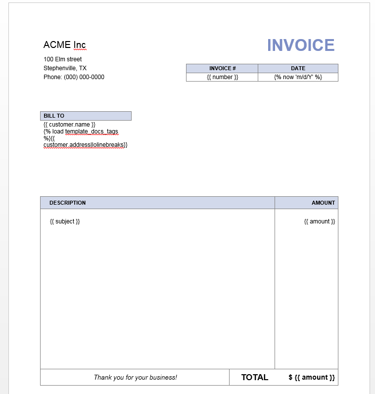
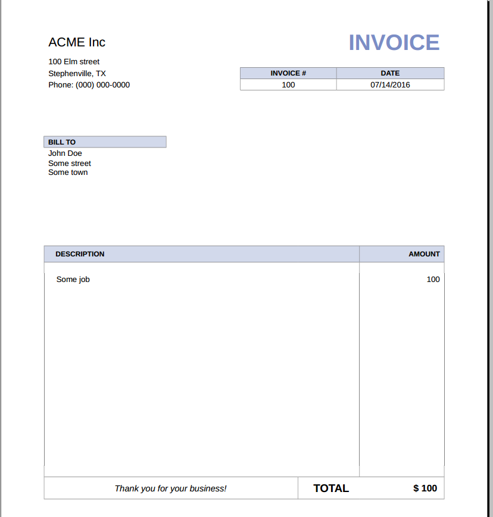

Django: how to create PDF, MS Word and Excel documents from templates
Posted on Mon 11 July 2016 in Programming
If you’re building a Django system that implies serving some kind of documents like reports or bills, chances are you want to provide docs in various formats from PDF to MS Word to HTML. But how to implement this without resorting to numerous templates and packages for each document type?
To tackle this issue I wrote templated_docs - a Django package that allows you to generate documents in multiple formats from just one template. And what’s even better is that you can use a regular Django templating language inside those docs!
In this post I’ll give you a gist of what you can do with this module.
Installation
1. Install LibreOffice
Templated-docs uses LibreOffice for conversion under the hood, so make sure you have a recent version installed (5.x versions will do fine). There is no need of having LibreOffice running all the time, in fact, you don’t even need a graphical subsystem to be installed on your server. We’ll use the suite as a library via the LibreOfficeKit API. Note the path Libreoffice has been installed to, we might need it later.
2. Install templated-docs
Installation is as simple as pip install templated-docs. Don’t forget to add
templated_docs to your INSTALLED_APPS Django settings. Then specify the
path to LibreOffice’s program directory in your settings:
TEMPLATED_DOCS_LIBREOFFICE_PATH = '/usr/share/libreoffice/program'
If you are using cpython you may need the libffi development package in order to compile CFFI.
- Ubuntu:
apt-get install libffi-dev - MacOS:
brew install libffi
3. There is no step 3, we’re all set!
Usage example
Let’s put together a dead-simple system for issuing invoices. What we have here
is a Customer model, and an InvoiceForm form to fill in some required fields.
# models.py
from django.db import models
class Customer(models.Model):
name = models.CharField(max_length=200)
address = models.TextField()
def __str__(self):
return self.name
# forms.py
from django import forms
from invoices.models import Customer
class InvoiceForm(forms.Form):
FORMAT_CHOICES = (
('pdf', 'PDF'),
('docx', 'MS Word'),
('html', 'HTML'),
)
number = forms.CharField(label='Invoice #')
customer = forms.ModelChoiceField(queryset=Customer.objects.all())
subject = forms.CharField()
amount = forms.DecimalField()
format = forms.ChoiceField(choices=FORMAT_CHOICES)
# views.py
from django.shortcuts import render
from templated_docs import fill_template
from templated_docs.http import FileResponse
from invoices.forms import InvoiceForm
def invoice_view(request):
form = InvoiceForm(request.POST or None)
if form.is_valid():
doctype = form.cleaned_data['format']
filename = fill_template(
'invoices/invoice.odt', form.cleaned_data,
output_format=doctype)
visible_filename = 'invoice.{}'.format(doctype)
return FileResponse(filename, visible_filename)
else:
return render(request, 'invoices/form.html', {'form': form})
Next, create the actual invoice template and save it as invoices/invoice.odt in your
Django templates’ folder. It could look like this:

And that’s it! Fill out the form, choose the format you need, and instantly get a templated and converted document (the one in the picture is PDF):

All the sample code, including the template, is available for playing in the example/ folder of the project’s repository.
Templated_docs offers more than a simple document generation. For example, you can embed images in documents and easily create Django management command that generate docs. Consult the documentation for more information.
Have you found an interesting applicaton for this package? Share in comments!